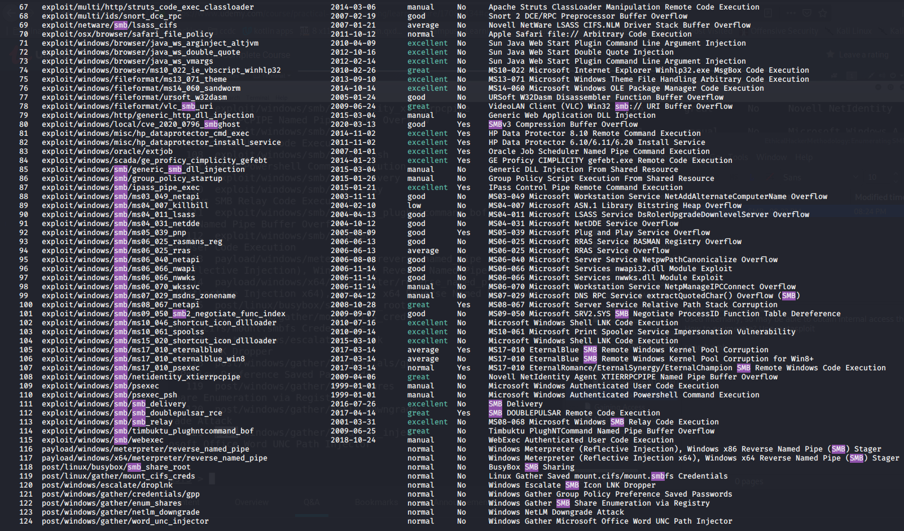

What is SMB? File share
Used internally, so may be able to obtain internal access through SMB
How to enumerate? Use metasploit
search smb

Find auxiliary/scanner/smb/smb_version
info - gives info about the module, and what options needed

set RHOSTS [ip] - sets the remote host, the ip you are attacking
type run to run module

Connecting to SMB with anonymous access:
connecting using smbclient
-L to list shares
smbclient -L \\\\[ip]\\

Using smbclient \\\\[ip]\\sharename to try to connect to each share


Looks like we have access, but running ls fails, not able to enumerate